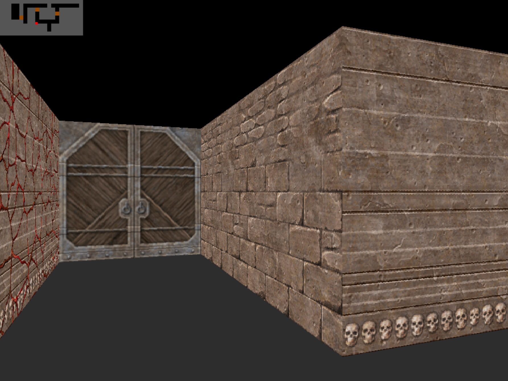

Cub3D
A custom 3D game engine using raycasting technology. Renders textured environments with player movement, collision detection, and configurable maps built entirely in C with MiniLibX graphics library.
Key Features
- Raycasting engine using Digital Differential Analyzer algorithm
- Player controls: move (W, A, S, D), rotate (←, →)
- Custom map parser from .cub files
- Textured walls (North, South, East, West)
- Interactive doors — toggle open/close with a keypress (K)
- Floor & ceiling color rendering
- MiniLibX window rendering with pixel-perfect drawing
C
Git